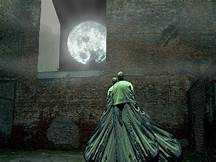

After 1985
After 1985 Beksinski moved away from his pure, surreal and fantastical works and became interested in digital art. This was popular at the time since photoshop was a new artistic frontier at the time. Personally these are not my favorite works of art but some, like the image below captures a unique perspective that I am captured by. Perhaps it is the ghostly figure or how lonely the image feels. As I am writing this I realise it is hard to write about art and not seem precocious, what a job. Throughout this period I was shocked at how far he pushed the program, sadly he was bound by the limitations of the technology and began to get frustrated. Eventuallly at the begining of the 2000's he regressed back into painting. This time his paintings were even more abstract with a series of erotic sketches, which for obvious reasons I am unable to show. My apologies.
The End
As I said previously he really threw himslelf into his work coming up to his later years with some very odd and fascinating works. Sadly in the year 2004 which just happens to be my brothers birthday, Beksinski was murdered for the equivalent of 100 euro, This crime was commited by his longterm housekeepers son. In a gruesome act of violence he was found with 17 stab wounds. He was murdered. Beksinski was buried in his home-town of Sanok and that year a red cross was erected at the Burning Man festival in his Honor. He is an icon for painting and a bastion for dystopian surrealsim. Beksinski was a talent we were all robbed of too soon.